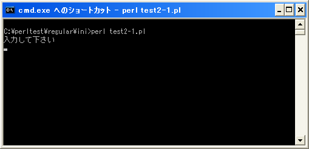

- Home ›
- Perl入門 ›
- Perlにおける正規表現 ›
- 正規表現の基本
結合演算子(=~)
正規表現ではパターンを定義し、対象の文字列がそのパターンに当てはまる(マッチする)かどうかを調べるために使います。そこでパターンにマッチしているかどうかを確認するために使用されるのが結合演算子「=~」です。
書式は次のようになっています。
左辺 =~ /パターン/
「=~」演算子は左辺に記述した文字列が右辺に設置した正規表現を使って記述されたパターンにマッチするかどうかを調べます。マッチした場合は式全体として真(true)を返し、マッチしない場合には偽(false)を返します。
真又は偽を返しますのでif文の条件式やwhile文の条件式として使用することが出来ます。
my $str = "Hello";
if ($str =~ /e/){
print "文字列に「e」を含みます¥n";
}
上記の場合は変数「$str」に格納されている値が、「=~」演算子の右側に記述されているパターンとマッチしているかどうかを評価し、マッチしていればif文の条件式は真(true)となります。
結合演算子の省略
結合演算子を使ってパターンとの比較が行われる左辺の値がデフォルト変数「$_」の場合、左辺の変数と結合演算子を省略することが可能です。
if ($_ =~ /e/){
print "文字列に「e」を含みます¥n";
}
上記は単に次のように記述することが出来ます。
if (/e/){
print "文字列に「e」を含みます¥n";
}
デフォルト変数が対象の場合はこのようにシンプルに記述することが出来ます。
サンプルプログラム
では簡単なプログラムで確認して見ます。
use strict;
use warnings;
use utf8;
binmode STDIN, ':encoding(cp932)';
binmode STDOUT, ':encoding(cp932)';
binmode STDERR, ':encoding(cp932)';
print "入力して下さい¥n";
while(<STDIN>){
if (/q/){
print "一致しました。終了します¥n";
exit(0);
}
print "入力して下さい¥n";
}
上記を「test2-1.pl」の名前で保存します(文字コードはUTF-8です)。そしてコマンドプロンプトを起動し、プログラムを保存したディレクトリに移動してから次のように実行して下さい。

プログラムを実行すると標準入力からの入力待ちとなります。今回は入力した値に「q」と言う文字が含まれるまで繰り返し入力が求められます。
入力した値に「q」と言う文字が含まれるていればパターンにマッチしてプログラムは終了します。
( Written by Tatsuo Ikura )

著者 / TATSUO IKURA
初心者～中級者の方を対象としたプログラミング方法や開発環境の構築の解説を行うサイトの運営を行っています。